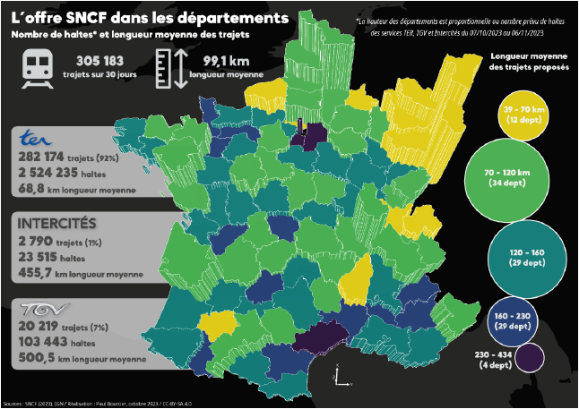
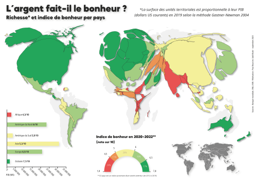
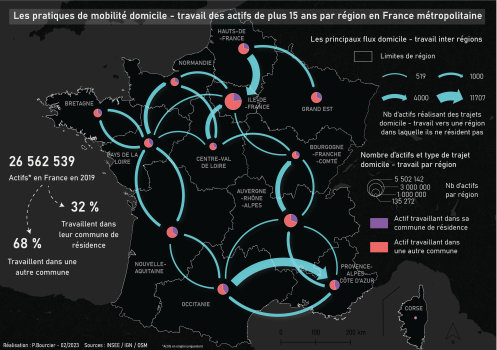
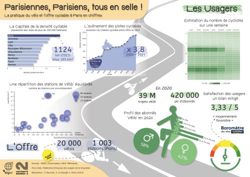

Nationality : 🇫🇷
👨🎓
SIGAT master's
graduate
📧
paulbourcier86@gmail.com
🐱
Github page
Paul Bourcier
Geomatics graduate
▶ Projects and realisations ◀

[Map]
SNCF transport services in metropolitan France
An extruded map showing the number of stops and average journey distance over 30 days in the metropolitan french "départements". Made with :
Rstudio - Qgis - Adobe Illustrator

[Map]
Wealth and happiness index in the world's countries
A cartogram showing GPD (shape deformation) and happiness index (colors) by country. Made with :
Libreoffice Calc - Qgis - ScapeToad - Rstudio - Adobe Illustrator

[Map]
Inter-regional commuting in 2019
A flow map showing the number of working people commuting to a region other than their region of residence in France (2019). Made with :
LibreOffice Calc - Qgis - Adobe Illustrator

[Dataviz]
Cycling facilities and usage in Paris
An infographic presenting data on cycling practices (number of cyclists, profile...) and supply (equipment, development policies...) in Paris. Made with :
LibreOffice Calc - Flourish - Adobe Illustrator